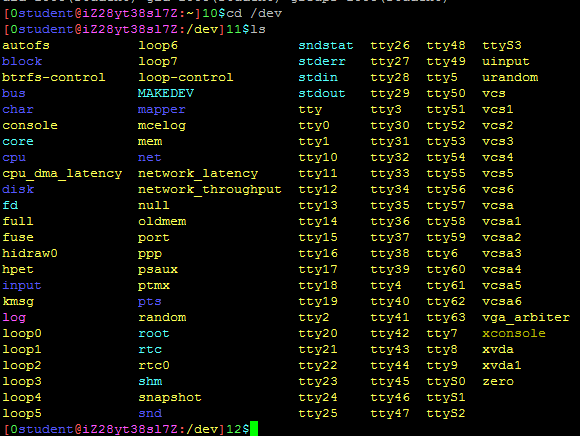
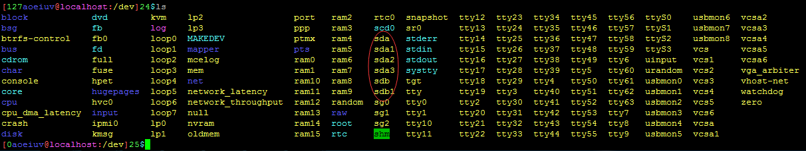
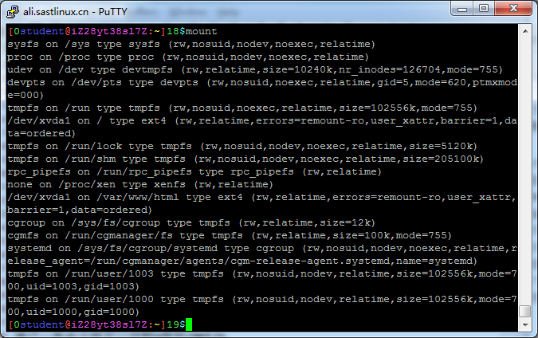
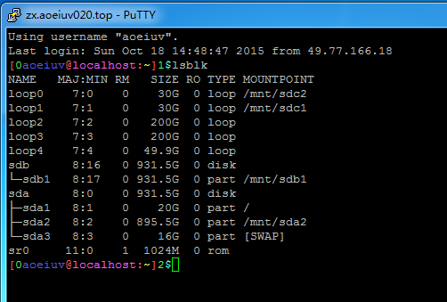
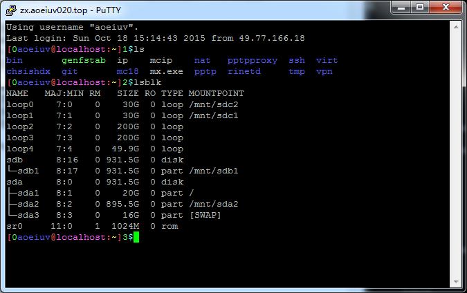
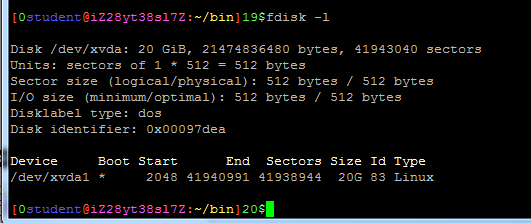

在Linux上看，到这里还没讲安装Linux，所以自然是用远程控制的看看，首先是一个目录，/dev，先来看看这个目录下面的东西。

dev是device（设备）的缩写，这下面的一个个文件，其实是一个个设备，比如各种的字符设备(stdin,tty)，块设备(loop,xvda)，硬盘都是块设备，以文件的形式放在这/dev目录下，而这文件名，和硬盘的接口有关，上图中的硬盘是xvda，xvd开头的是虚拟机专用的虚拟接口，现在的电脑一般都是SATA接口，一般虚拟机默认创建的硬盘也是SATA接口，对应的文件名是sd开头，按顺序abcd，也就是第一块硬盘叫sda，第二块硬盘叫sdb，直接读写这些文件，就可以读写硬盘里的每一个字节。

有这些文件还不能看到硬盘里的文件，需要“挂载”(mount)，比如插入一个u盘，发现/dev/sdb是这个u盘，然后要看这个u盘的内容，mount，/dev/sdb，/mnt/u，通过这样一条命令就可以挂载u盘到/mnt/u，然后就能在这个文件夹里看到u盘中的东西，有的Linux发行版为了方便，会自动挂载，比如ubuntu，会自动挂载到/media目录下，卸载是umount，挂载也可以把正常的目录挂载到另一个目录，加参数--bind，直接输入mount可以看到所有的挂载的情况，什么设备挂载到什么地方包括文件系统以及特殊的选项，都会输出。

因为挂载不只是可以将磁盘挂载到目录，所以这里会有些看不懂的并不是磁盘的挂载的信息。
然后说一个命令，lsblk，ls是list的意思，ls开头的命令都是列出某些东西，lsblk是list block device，列出块设备，能看到所有硬盘u盘之类的，包括每个分区，这里有它们的名字(name)就是在/dev/目录下的文件名，设备号(MAJ:MIN)就是用两个数字代表那个设备，是否可移动(RM)是不是u盘之类的，在windows上也有显示“可移动磁盘”，大小(SIZE)只读(RO)，类型(TYPE)主要就是disk表示硬盘，part表示硬盘上的一个分区，挂载点(MOUNTPOINT)就是这个分区被挂载到了哪个目录。


那个loop是回环设备，简单的说就是用来把一个普通文件当成一个硬盘来使用，先不管。
还有个命令，fdisk，这命令一般权限是用不了的，我处理了一下能用了，所以同学们可以试试，这东西是用来给硬盘分区的，自然也可以用来查看硬盘上的分区的情况。
fdisk -l
